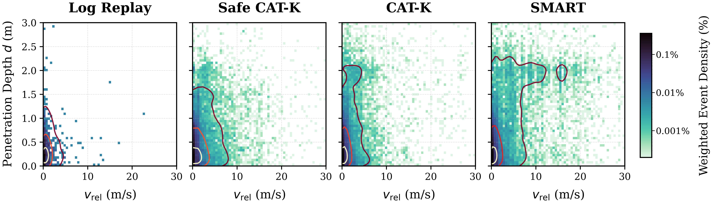
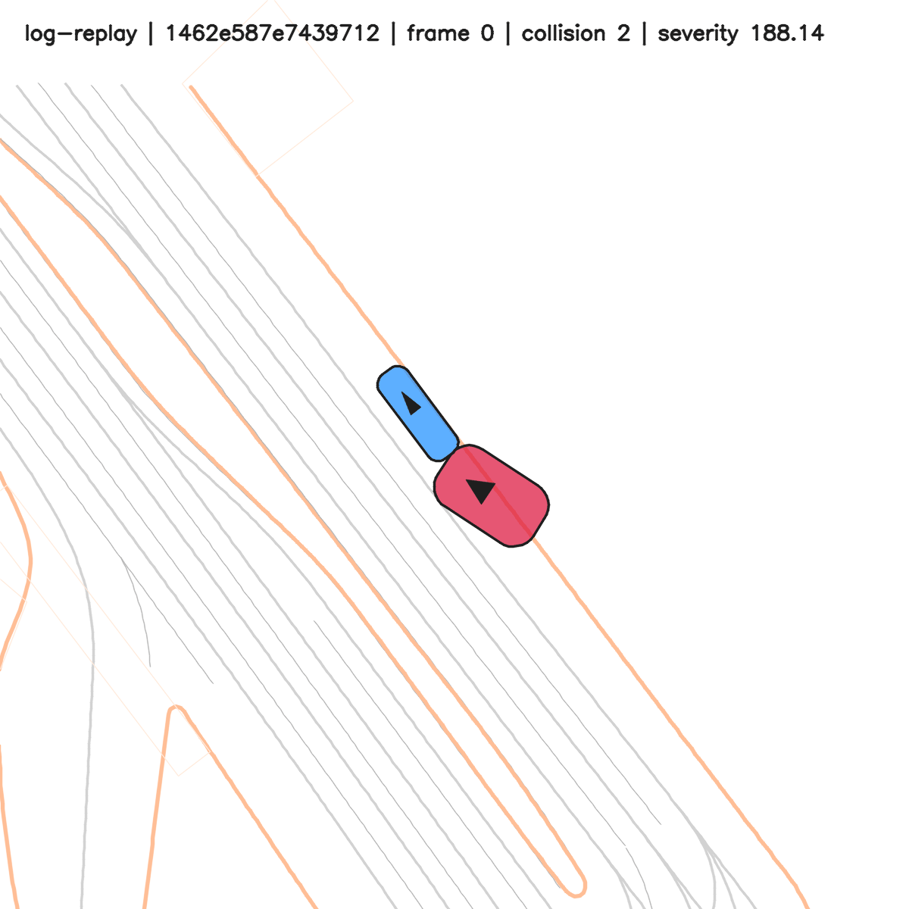
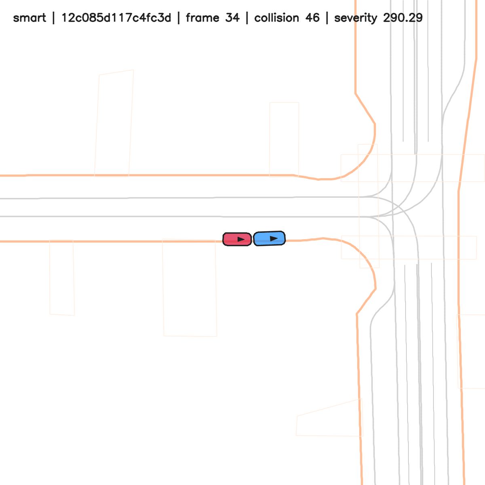
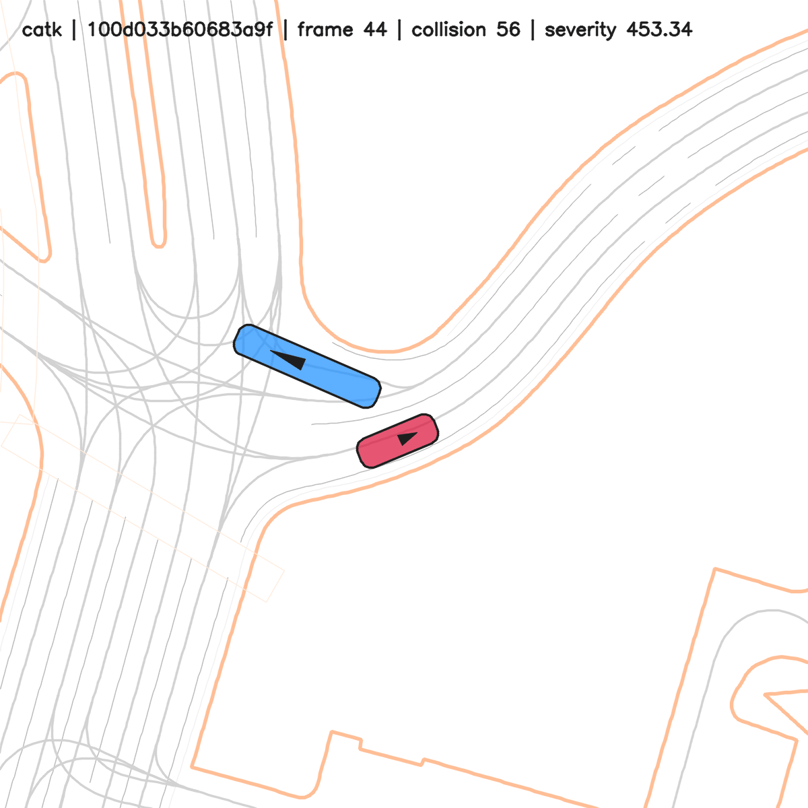
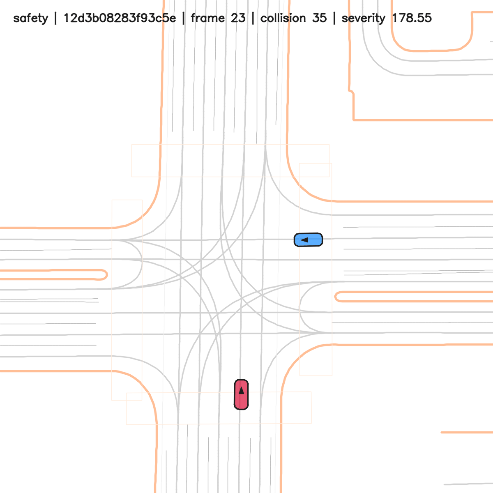
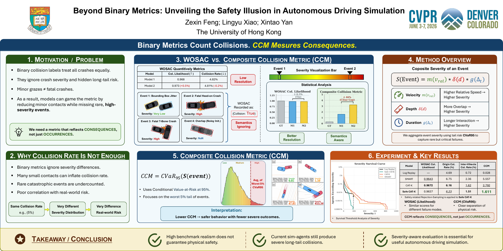

Relative velocity
Higher relative impact speed increases event severity.
CVPR 2026 · Simulation for Autonomous Driving Workshop
Unveiling the Safety Illusion in
Autonomous Driving Simulation
The University of Hong Kong
01 / The safety illusion
Binary collision labels collapse very different events into the same outcome. Bounding-box jitter, a brief contact, and a high-speed collision can all be recorded as a collision. A similar collision rate can therefore conceal very different severity distributions.
We study the gap between benchmark-facing realism and physical risk in autonomous driving simulation. Composite Severity Analysis represents collisions through impact velocity, penetration depth, and contact duration. The Composite Collision Metric (CCM) then summarizes severe outcomes in the tail of the distribution.

02 / Composite Collision Metric
Higher relative impact speed increases event severity.
Greater vehicle overlap increases event severity.
A longer interaction increases event severity.
For each collision event, vrel is relative impact velocity, d is penetration depth, and Δt is contact duration. The functions m, δ, and g convert these quantities into severity factors.
Tail aggregation
Average the worst 5% of event severities. Lower CCM indicates lower severity in the tail.
95% of events Worst 5%
Let S be the event-severity distribution. The standard CVaR definition makes the worst-5% aggregation explicit:
Here (x)+ = max(x, 0), and η is a severity threshold. For a continuous distribution, this is the mean severity above its 95th percentile.
For N observed event severities S1, …, SN, the corresponding empirical expression is:
When 0.05N is an integer, this equals the arithmetic mean of the largest 0.05N severity values.
03 / Results on WOSAC
Safety-oriented rejection sampling in Safe CAT-K reduces CCM from 2.792 to 1.611, while collision likelihood changes only slightly.
| Model | Collision likelihood ↑ | Original collision rate (%) ↓ | Inter-vehicle collision rate (%) ↓ | CCM ↓ |
|---|---|---|---|---|
| Log Replay | — | 4.69 | 0.72 | 0.028 |
| SMART | 0.9643 | 6.75 | 2.36 | 5.557 |
| CAT-K | 0.9672 | 6.16 | 1.62 | 2.792 |
| Safe CAT-K | 0.9637 | 6.23 | 1.51 | 1.611 |

04 / Qualitative examples
Selected collision scenarios illustrating vehicle interactions and contact dynamics.




05 / Poster

Severity-aware evaluation reveals rare, consequential failures that binary collision rates can hide.
Read the paper ↗